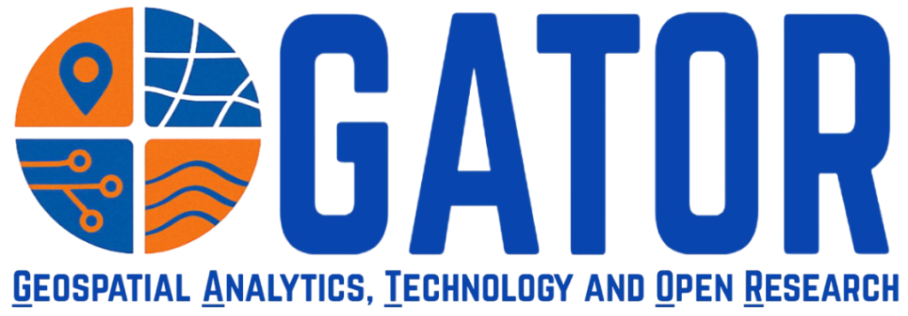
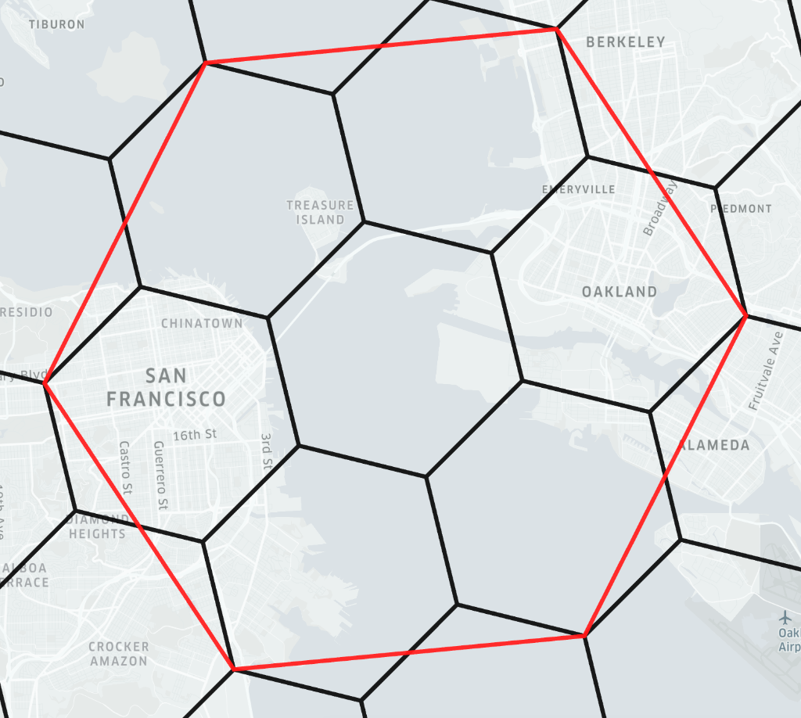

Politecnico di Milano · 2026
Toward Autonomous Spatial Intelligence
From Agentic Governance to Discrete Global Grids
Levente Juhász, Ph.D.
Geospatial Analytics, Technology and Open Research (GATOR) Lab
University of Florida

gatorlab.io

Politecnico di Milano · 2026
From Agentic Governance to Discrete Global Grids
Levente Juhász, Ph.D.
Geospatial Analytics, Technology and Open Research (GATOR) Lab
University of Florida

gatorlab.io
We are moving from analytical tools to autonomous agents.

Large Language Models are next-token prediction engines. They do not process words, numbers, or geometry — they process discrete tokens.
"Geospatial Analysis" → broken into discrete chunks:
Geo spatial _Analysis
Semantics emerge from the probabilistic co-occurrence of tokens — not from any explicit mathematical representation.
Key implications for GeoAI:
A standard LLM generates text and stops. An agent operates in a goal-directed control loop — enabling it to use external tools, read results, and self-correct.
💡
Think
Decompose the problem into sub-tasks
⚙️
Act
Execute a tool (Python, DuckDB, API)
👁️
Observe
Read the result or error output
🔄
Update
Self-correct and plan the next step

Applied to geospatial tasks, this means an agent can:
Achieving Autonomous GIS requires solving two fundamentally different problems simultaneously.
Problem 1 · The Agent
Unguided agents hallucinate code, lose spatial context, and violate geographic data contracts. Scaling the model does not fix this.
Problem 2 · The Data
Continuous coordinates and planar geometry lack the discrete, hierarchical structure agents need to reason reliably.
LLMs are next-token prediction engines. They have no number sense. Continuous coordinates break their token grammar.
Two points 22 m apart (crossing a digit boundary):
40.9999 → 40.9999
41.0001 → 41.0001
Zero shared tokens. The model sees these as completely unrelated.
Same points as H3 cell IDs:
Spatial proximity is explicitly encoded in the token structure.

Two foundational components, one coherent vision for the Automated Geospatial Scientist.
Pillar I · The Reasoning Engine
A structured agentic framework (Knowledge, Behavior, Skills) that eliminates drift and enforces reproducibility in geospatial code generation.
→ Presented in Part I
Pillar II · The Standardized Substrate
A mathematically rigorous tessellation of the Earth into discrete, hierarchical cells — a native, AI-compatible vocabulary for the planet.
→ Presented in Part II